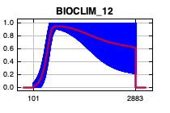
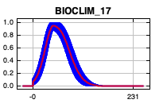
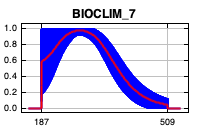
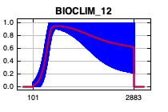
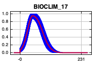
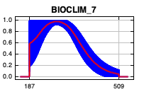
 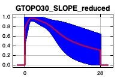
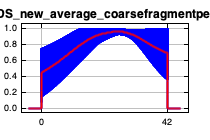
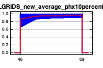
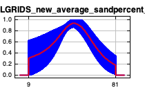
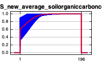
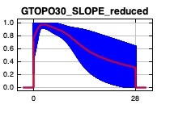
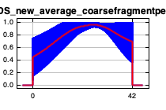
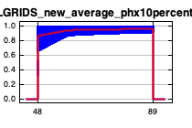
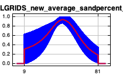
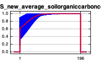
 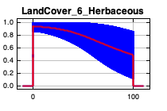
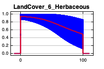
 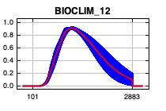
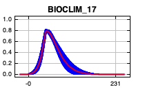
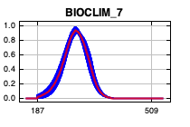
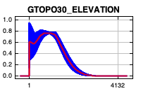
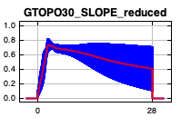
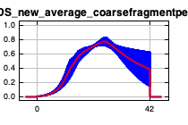
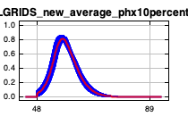
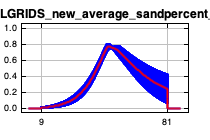
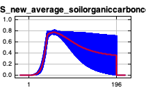
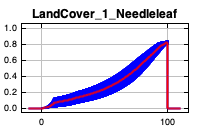
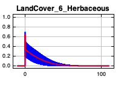
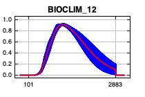
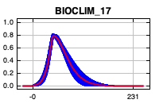
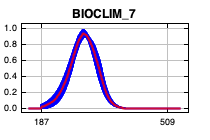
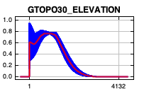
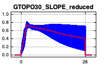
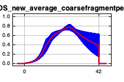
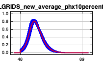
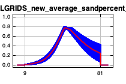
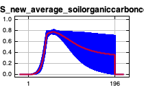
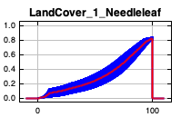
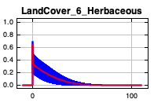
| Variable | Percent contribution | Permutation importance |
|---|---|---|
| LandCover_1_Needleleaf | 30.5 | 5.5 |
| BIOCLIM_17 | 24.3 | 45.6 |
| BIOCLIM_12 | 22.5 | 23.5 |
| LandCover_6_Herbaceous | 6 | 0.8 |
| ISRICSOILGRIDS_new_average_sandpercent_reduced | 3.9 | 3.3 |
| BIOCLIM_7 | 3.3 | 8.8 |
| GTOPO30_SLOPE_reduced | 3.2 | 4.1 |
| BIOCLIM_1 | 2.9 | 1.7 |
| GTOPO30_ELEVATION | 1.4 | 2.6 |
| ISRICSOILGRIDS_new_average_soilorganiccarboncontent_reduced | 1.1 | 1.9 |
| ISRICSOILGRIDS_new_average_coarsefragmentpercent_reduced | 0.8 | 2 |
| ISRICSOILGRIDS_new_average_phx10percent_reduced | 0.2 | 0.4 |